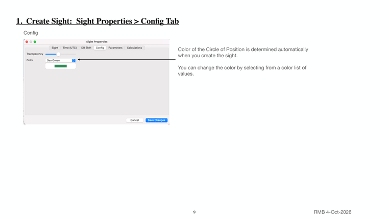

Previous | Contents | Next

1. Create Sight: Sight Properties > Config Tab
Config
Color of the Circle of Position is determined automatically
when you create the sight.
You can change the color by selecting from a color list of
values.
9 RMB 4-Oct-2026